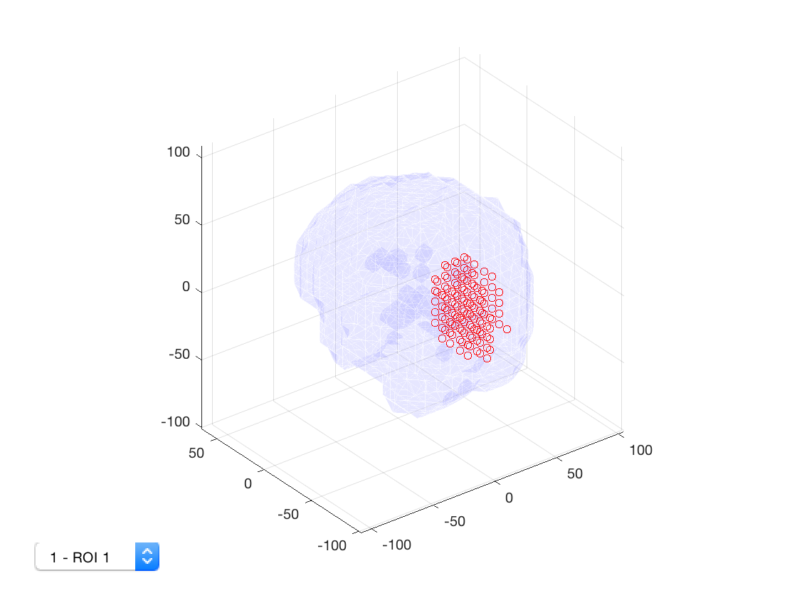
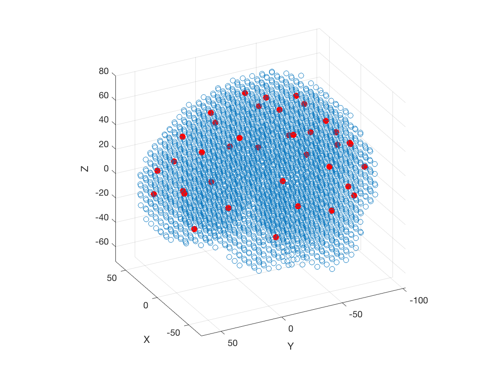
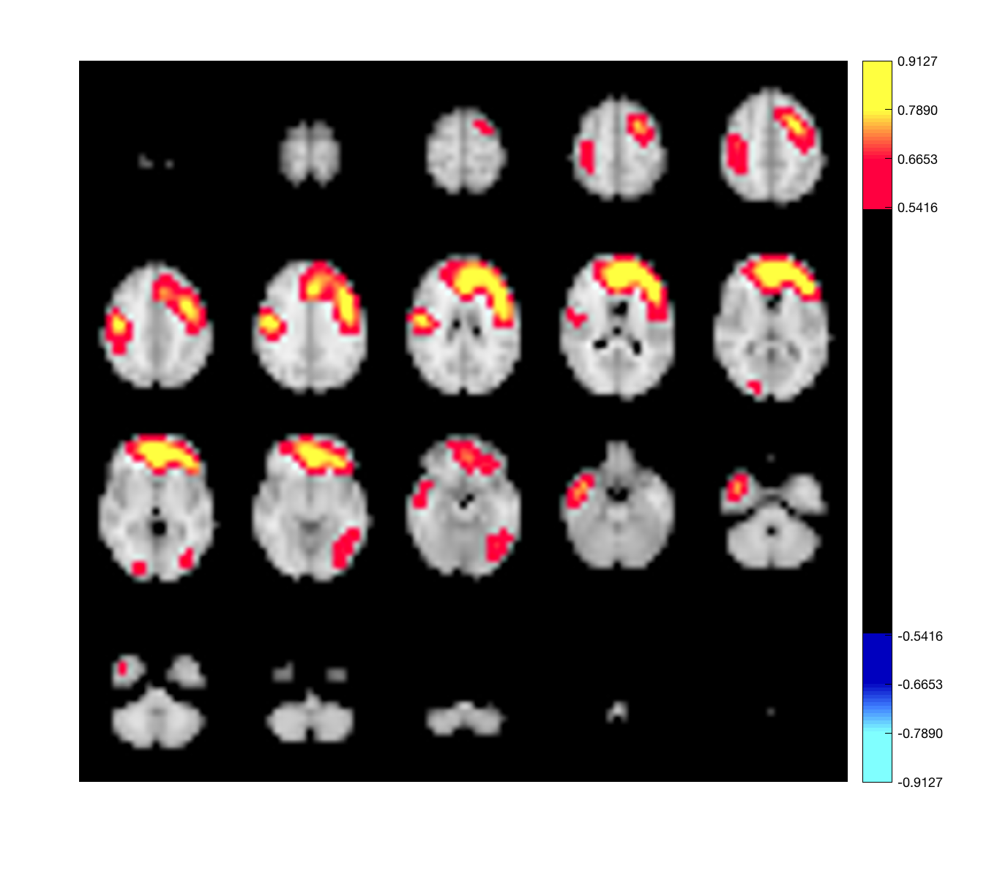
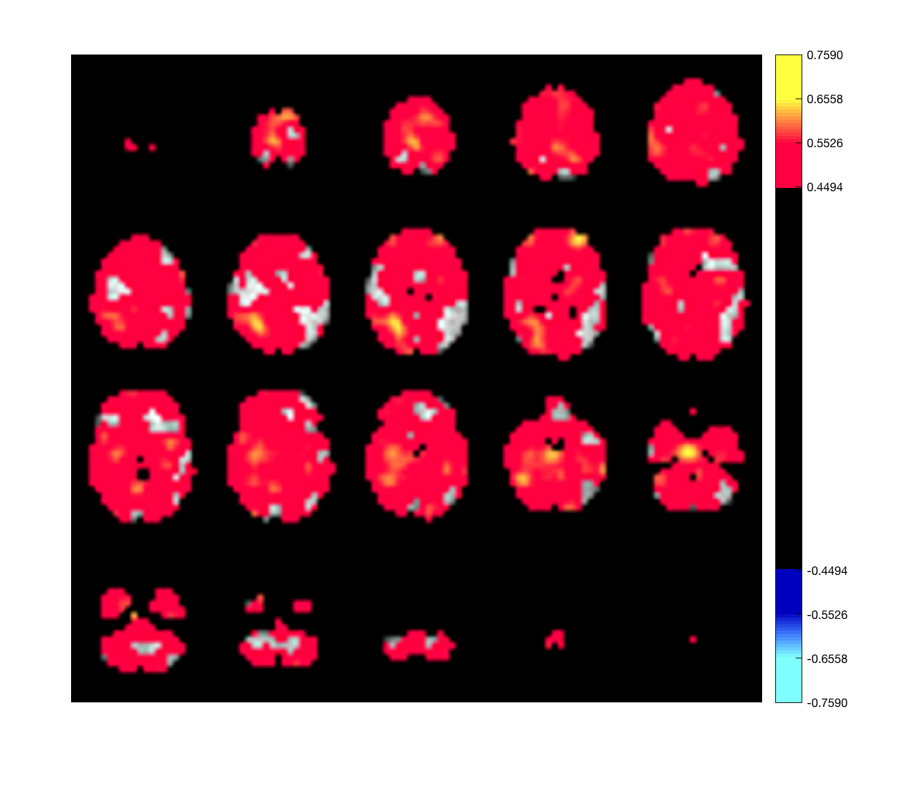

Contents
Example of using Parcellation objects
This example shows how to use the OSL Parcellation object to work with parcellations. Working with parcellations can be tedious, because there are several different ways to represent parcellations. Suppose we have a parcellation in MNI space on an 8mm grid. This space is codified in a standard mask - an anatomical brain image that defines the size of the space, and which grid coordinates are occupied by the brain. Although the space is defined on a regular grid, the brain only occupies a small subset of the volume. For example, in OSL the standard 8mm brain exists in a grid of size 23*27*23, but the brain only occupies 3559 voxels. A parcellation could be defined either in the volume (23*27*23) or in a vector of length equal to the number of voxels. Thus a parcellation with N parcels could be represented as
- 23*27*23*N matrix (which we'll refer to as 'XYZ x parcels') - 3559*N matrix (which we'll refer to as 'Voxels x parcels')
This is a complete representation of all possible parcellations. Note that parcels may be
- Weighted - A voxel may be assigned to a parcel with a weighting factor - Overlapping- A voxel may belong to multiple parcels
In the case of a parcellation that is neither weighted nor overlapping, it is also possible to represent the parcellation using either a 'XYZ x 1' or 'Voxels x 1' matrix, where the value specifies which parcel the voxel belongs to. In this case, the matrix only has integer entries, and it is not possible to represent weighted or overlapping parcels. Thus there are 4 ways to represent parcellations. Converting between them requires the specification of a standard mask, which provides the mapping between voxel indices and MNI coordinates.
Thus, working with a parcellation requires keeping track of both the parcellation itself, and the standard mask. It may also involve changing the parcellation from one representation to another depending on what inputs are required by other analysis code. The Parcellation object aims to facilitate these steps.
To load a parcellation, create a parcellation object providing input as a '.nii' file. The .nii file should contain a matrix in one of the 4 supported sizes.
p = parcellation(fullfile(osldir,'parcellations','fmri_d100_parcellation_with_PCC_reduced_2mm_ss5mm_ds8mm.nii.gz'));
Alternatively, you can pass in a matrix in one of these supported formats
m = read_avw(fullfile(osldir,'parcellations','fmri_d100_parcellation_with_PCC_reduced_2mm_ss5mm_ds8mm.nii.gz')); size(m) p = parcellation(m);
ans =
23 27 23 38
When the parcellation is loaded, two things happen
- The parcellation is converted to 'XYZ x parcels' representation - The template mask is guessed based on the size of the matrix
If you know the appropriate template mask, you can specify it manually (although this has not been extensively tested - many parcellations, and all of those supplied with OSL, work using the included standard mask files).
The Parcellation object displays some information about the loaded parcellation
p
p =
parcellation with properties:
weight_mask: [23×27×23×38 double]
template_mask: [23×27×23 double]
template_coordinates: [3559×3 double]
template_fname: '/Users/romesh/oxford_postdoc/toolboxes/osl/std_...'
labels: {38×1 cell}
is_weighted: 1
is_overlapping: 1
resolution: 8
n_parcels: 38
n_voxels: 3559
- weight_mask: The XYZ x parcels representation of the parcellation - template_mask: The background structural image/mask - template_coordinates: The MNI coordinates for each voxel - template_fname: The filename of the standard mask - labels: If provided, the names of each ROI - is_weighted: true if the voxels are weighted - is_overlapping: true if any voxel belongs to more than one parcel - resolution: spatial resolution of the standard mask - n_parcels: number of parcels in the parcellation - n_voxels: number of voxels in the mask
Reshaping matrices
One the most basic operations is converting between the XYZ x parcels and Voxels x parcels representations. You can do this with the to_matrix() and to_vol() methods. For example
matrix_representation = p.to_matrix(p.weight_mask); size(matrix_representation) volume_representation = p.to_vol(matrix_representation); size(volume_representation)
ans =
3559 38
ans =
23 27 23 38
These functions also support an additional usage pattern. Often it is useful to visualize parcel-based data on the brain - for example, if you know the activation or spectral power at the parcel level. The data then consists of a vector, parcels x 1 (or 1 x parcels). Both to_matrix() and to_vol() can be given such a vector, which will then be expanded onto the voxels in either the matrix or volume representation.
expanded_volume = p.to_matrix(1:38); size(expanded_volume)
Warning - parcellation is being binarized
ans =
3559 1
Note that this can only be performed if the parcellation is binary (unweighted, with no overlap). If the parcellation does not meet these requirements, it will automatically be converted, and a warning will be displayed to indicate that this has occurred.
Finally, it also possible to convert the parcellation to the 'Voxels x 1' representation where value indicates parcel assignment
v = p.value_vector; size(v) v(end-10:end)
Warning - parcellation is being binarized
ans =
3559 1
ans =
0
0
27
27
28
0
27
20
20
19
20
Note that voxels that are not assigned to a parcel are given a value of 0.
Binarizing
We saw above that some operations required the parcellation to be binary. You can obtain the weight matrix corresponding to a binary parcellation using the binarize() function
binary_mask = p.binarize();
Binarization corresponds to first removing the overlap between parcels, by assigning them to a single parcel. This assignment is based on the voxel weights. For example, if voxel 1 belongs to parcel 1 (0.5) and parcel 2 (0.25), then it will be assigned to parcel 1. If you only wish to remove the overlap, use
no_overlap = p.remove_overlap();
This returns a weight matrix where the original weights are preserved, but there is no overlap. For example, here the new weights will be parcel 1 (0.5) and parcel 2 (0). To remove the weights, use
unweighted = p.remove_weights();
This returns a weight matrix where the overlap has not been removed, but the weights are binary. For example, for voxel 1 the new weights will be parcel 1 (1) and parcel 2 (1). Binarizing with binarize() corresponds to removing overlap, followed by removing weights (in that order).
If you want a new parcellation object based on the binarized weight matrix, you can simply construct a new parcellation object with the binary matrix as the input
binary_parcellation = parcellation(p.binarize)
binary_parcellation =
parcellation with properties:
weight_mask: [23×27×23×38 double]
template_mask: [23×27×23 double]
template_coordinates: [3559×3 double]
template_fname: '/Users/romesh/oxford_postdoc/toolboxes/osl/std_...'
labels: {38×1 cell}
is_weighted: 0
is_overlapping: 0
resolution: 8
n_parcels: 38
n_voxels: 3559
Note how the binary parcellation has is_weighted=0 and is_overlapping=0.
Usage with ROI-nets
MEG-ROI-nets can compute parcel timecourses based on voxel timecourses, using methods such as PCA to reduce dimensionality. This functionality is provided through ROInets.get_node_tcs(). The parcellation needs to be passed in as a binary Voxels x parcels representation. As a shortcut, this can be obtained using the parcelflag() method. For example, to compute parcel timecourses from an SPM object, use
% p = parcellation('parcellation_file.nii.gz'); % D = spm_eeg_load('meeg_file.mat'); % D = ROInets.get_node_tcs(D,p.parcelflag,'PCA')
Plotting and visualization in Matlab
The Parcellation object provides a number of options for plotting. To start with, the parcellation can be plotting using
p.plot
This displays a 3D plot of the parcellation. Each ROI can be selected from the dropdown list. The MNI coordinates for each parcel (plotted here using the scatter3() function) can be obtained using
r = p.roi_coords;
class(r)
size(r)
size(r{1})
ans =
cell
ans =
1 38
ans =
129 3
which returns a cell array of matrices, where each matrix contains the MNI coordinates for the voxels belonging to the parcel. It is also possible to show spatial maps of volume-wise activation - for example, a power map, or the activation map for an HMM state.
p.plot_activation(rand(size(p.template_mask)));
The input should be in XYZ x 1 format, but it will be automatically expanded if provided in Parcels x 1 format. For example
p.plot_activation(rand(p.n_parcels,1));
Warning - parcellation is being binarized
Lastly, if you have a brain network connectivity matrix, you can display the strongest connections using the plot_network method. For example, to plot the top 5% of connections, you can use
connection_matrix = randn(p.n_parcels); size(connection_matrix) p.plot_network(0.1*connection_matrix,0.95)
ans =
38 38
 Note that the line thickness is proportionate to the connection strength, so the thickness can be scaled by multiplying by a constant (0.1 in the example above).
Plotting using fslview
There are a number of plotting options using fslview. These can be accessed through the fslview method. By default, this will display the parcellation with one volume for each parcel e.g.
p.fslview
The fslview method allows you to pass in a matrix to be displayed. For example,
% p.fslview(m)
where the m matrix will be expanded into volume format if required. To plot all parcels in the same volume, you can use
p.fslview(p.value_vector)
Warning - parcellation is being binarized
To plot the parcellation after binarization, you can use
p.fslview(p.binarize)
Saving nii files
Lastly, and perhaps most importantly, you can save a matrix to a .nii file using
p.savenii(p.weight_mask,'filename')
ans = filename
this will create a file 'filename.nii.gz'. The weight mask is written directly into the .nii file, so it may only make sense if you pass in a volume. For example, to make a .nii file with the XYZ x 1 representation of the parcellation (value indices parcel membership) you could use
p.savenii(p.to_vol(1:38),'filename')
Warning - parcellation is being binarized ans = filename
which will first expand the parcel assignments to each voxel.
Importantly, the savenii() method also copies the qform/xform portion of the header from the template mask into the newly saved file. This is important, partly because it specifies whether not the .nii file is saved in radiological orientation or not. Note that if the .nii file is missing this information, it may not be usable for some purposes.